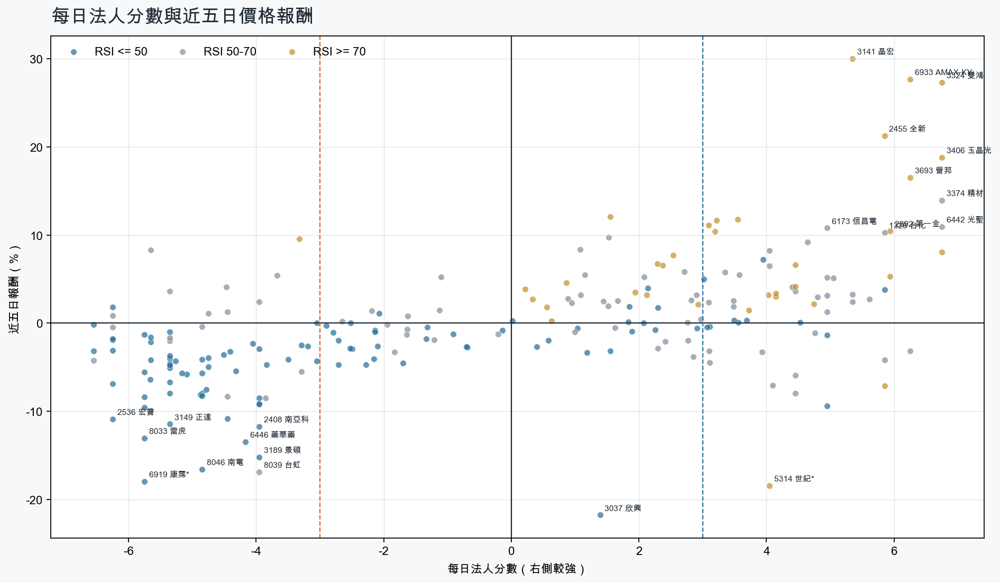
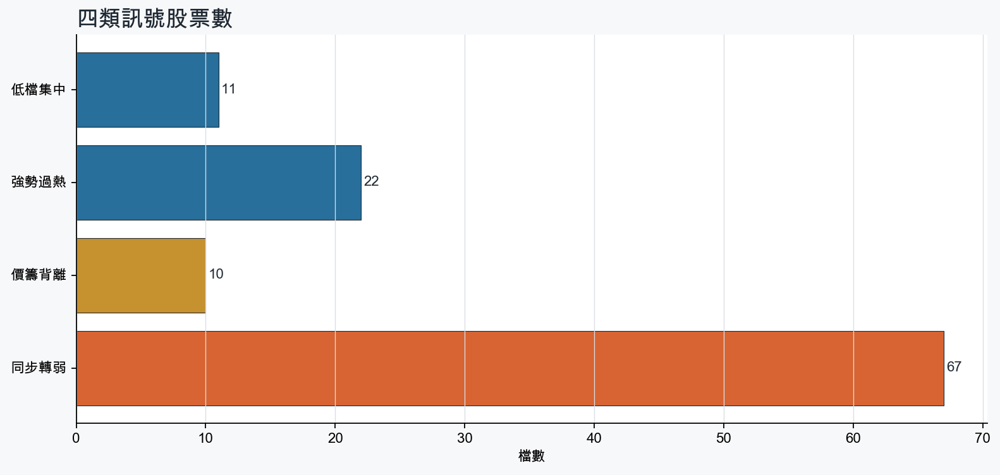
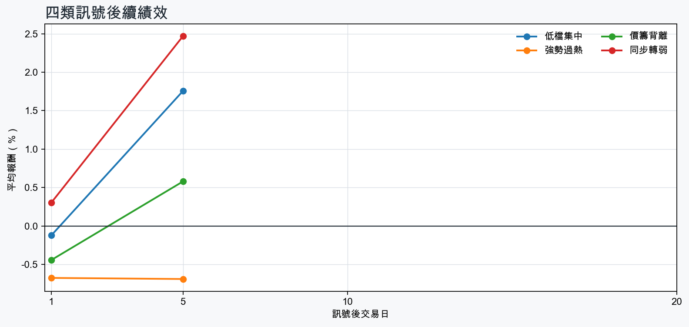

市場情緒中性分歧
近5日法人合計+82,571 張
篩選池上漲比例44.1%
籌碼好 / RSI低11 檔
籌碼差 / 價跌15 檔



MOOD × MONEY
情緒與籌碼雷達
熱度代表被討論程度；情緒分與法人方向分開計算。熱門不等於適合追價，樣本不足也不硬判多空。
| 股票 | 情緒 | 討論熱度 | 情緒 × 籌碼 | 情緒 × 基本面 |
|---|---|---|---|---|
| 8046 南電同步轉弱 | 情緒低迷 -54.5信心 100 | 1003 篇 / 238 留言 / 3 則新聞 | 情籌雙弱法人分 -4.8 | 基本面佳、情緒悲觀基本面分 +3.6 |
| 1815 富喬強勢過熱 | 情緒高漲 +71.2信心 100 | 813 篇 / 63 留言 / 3 則新聞 | 情籌共振法人分 +4.2 | 基本面與情緒共振基本面分 +3.6 |
| 3006 晶豪科價籌背離 | 偏多 +24.3信心 82 | 781 篇 / 61 留言 / 3 則新聞 | 熱門但法人撤退法人分 -4.8 | 基本面與情緒共振基本面分 +3.6 |
| 3324 雙鴻強勢過熱 | 偏多 +24.5信心 81 | 771 篇 / 58 留言 / 3 則新聞 | 情籌共振法人分 +6.8 | 基本面與情緒共振基本面分 +3.6 |
| 2455 全新強勢過熱 | 偏多 +34.6信心 97 | 752 篇 / 43 留言 / 3 則新聞 | 情籌共振法人分 +5.8 | 基本面與情緒共振基本面分 +3.6 |
| 6446 藥華藥同步轉弱 | 中性分歧 -6.1信心 86 | 741 篇 / 47 留言 / 3 則新聞 | 高熱分歧法人分 -4.2 | 基本面與情緒分歧基本面分 +3.6 |
| 6669 緯穎價籌背離 | 偏多 +26.3信心 75 | 731 篇 / 44 留言 / 3 則新聞 | 熱門但法人撤退法人分 -5.7 | 基本面與情緒共振基本面分 +3.0 |
| 3645 達邁價籌背離 | 偏多 +23.3信心 54 | 711 篇 / 45 留言 / 0 則新聞 | 熱門但法人撤退法人分 -6.2 | 基本面與情緒分歧基本面分 +0.5 |
| 3406 玉晶光強勢過熱 | 情緒高漲 +67.2信心 67 | 661 篇 / 24 留言 / 3 則新聞 | 情籌共振法人分 +6.8 | 基本面與情緒共振基本面分 +3.0 |
| 6933 AMAX-KY強勢過熱 | 情緒高漲 +43.6信心 44 | 531 篇 / 6 留言 / 2 則新聞 | 情籌共振法人分 +6.2 | 基本面與情緒共振基本面分 +3.6 |
| 3189 景碩同步轉弱 | 偏空 -29.7信心 30 | 410 篇 / 0 留言 / 3 則新聞 | 情籌雙弱法人分 -4.0 | 基本面佳、情緒悲觀基本面分 +3.6 |
| 2327 國巨*同步轉弱 | 偏空 -29.7信心 30 | 410 篇 / 0 留言 / 3 則新聞 | 情籌雙弱法人分 -4.8 | 基本面佳、情緒悲觀基本面分 +3.6 |
01
籌碼好 / RSI低
優先研究基本面；法人續買且價格止穩時，才適合分批觀察。
| 股票 / 確認狀態 | 每日法人分 | 浦男式近似 | 法人加速度 | RSI / 相對強弱 | 量價確認 | 融資融券 | 每週集保確認 | 基本面 | 情緒 / 情籌 | 近期消息 | 論壇討論 |
|---|---|---|---|---|---|---|---|---|---|---|---|
| 2357 華碩可研究 · 100 分籌碼與價格確認，可列研究清單 | +3.7法人 +5,087 張 / 3 天 | 命中 · 95站上月線；中期均線偏多；法人籌碼偏多；留意量能尚未確認 | +2,589 張近3日 +3,929 / 連續 -1 日 | 45.2相對大盤 +15.9% | 量比 0.83確認分 +5.8價格、量能與籌碼未見明顯弱項 | -%融資 - 張 / 融券 - 張 | +1.76 pp1000張 +2.62 pp | 單月營收年增 +53.3%；累計營收年增 +40.9%；上半年 EPS 38.83上半年營益率 7.1%來源：公開資訊觀測站 | 樣本不足 +0.0熱度 25 / 信心 10情緒樣本不足 | 未上市先賣光！輝達 RTX Spark 掀搶購潮，華碩、微星急向輝達追單TechNews 科技新報 · 09/01 | 近期沒有明確提及本股的論壇樣本 |
| 3231 緯創可研究 · 93 分籌碼與價格確認，可列研究清單 | +3.0法人 +22,846 張 / 3 天 | 接近 · 81站上月線；中期均線偏多；法人籌碼偏多；留意明顯弱於大盤、動能位置非最佳 | +52,935 張近3日 +34,319 / 連續 +3 日 | 43.9相對大盤 -3.3% | 量比 2.01確認分 +3.7近20日弱於大盤 | -%融資 - 張 / 融券 - 張 | +2.57 pp1000張 +2.44 pp | 單月營收年增 +60.8%；累計營收年增 +88.2%；上半年 EPS 7.78上半年營益率 3.6%來源：公開資訊觀測站 | 偏多 +29.7熱度 41 / 信心 30情籌共振 | 緯創AI伺服器需求旺到明年 上半年獲利創高 全球產能再擴張理財周刊 · 09/03〈焦點股〉戴爾財報報喜 帶旺緯創價量齊揚漲逾半根停板news.cnyes.com · 09/03 | 近期沒有明確提及本股的論壇樣本 |
| 3706 神達等待確認 · 83 分籌碼有訊號，但價格尚未確認 | +3.6法人 +8,649 張 / 3 天 | 接近 · 75中期均線偏多；法人籌碼偏多；法人買盤加速；留意未站月線、明顯弱於大盤 | +1,721 張近3日 +5,953 / 連續 -2 日 | 45.8相對大盤 -4.3% | 量比 1.39確認分 +1.1收盤跌破20日線；近20日弱於大盤 | -%融資 - 張 / 融券 - 張 | +3.03 pp1000張 +3.29 pp | 單月營收年增 +49.7%；累計營收年增 +45.5%；上半年 EPS 2.58上半年營益率 4.0%來源：公開資訊觀測站 | 樣本不足 +0.0熱度 25 / 信心 10情緒樣本不足 | 3706 神達 - 持有神達的心情 ^^ - 股市爆料同學會CMoney · 09/03 | 近期沒有明確提及本股的論壇樣本 |
| 3042 晶技等待確認 · 75 分籌碼有訊號，但價格尚未確認 | +5.0法人 +7,204 張 / 3 天 | 接近 · 59法人籌碼偏多；法人買盤加速；買超具延續性；留意未站月線、中期均線未翻多 | +2,429 張近3日 +6,219 / 連續 +1 日 | 46.3相對大盤 -2.8% | 量比 0.63確認分 -1.1收盤跌破20日線；20日線低於60日線；成交量不足 | -%融資 - 張 / 融券 - 張 | +1.13 pp1000張 +2.46 pp | 單月營收年增 +22.9%；累計營收年增 +9.9%；上半年 EPS 2.96仍需觀察下一期財報延續性來源：公開資訊觀測站 | 樣本不足 +0.0熱度 0 / 信心 0情緒樣本不足 | 近期沒有通過股票語境篩選的新聞 | 近期沒有明確提及本股的論壇樣本 |
| 4763 材料*-KY等待確認 · 77 分籌碼有訊號，但價格尚未確認 | +4.0法人 +7,407 張 / 3 天 | 接近 · 67中期均線偏多；法人籌碼偏多；法人買盤加速；留意未站月線、明顯弱於大盤 | +6,394 張近3日 +6,121 / 連續 -1 日 | 43.5相對大盤 -3.9% | 量比 1.22確認分 +1.5收盤跌破20日線；近20日弱於大盤 | -%融資 - 張 / 融券 - 張 | -0.17 pp1000張 -0.18 pp | 單月營收年增 +32.1%；上半年 EPS 1.85；上半年營益率 41.7%累計營收年增 -25.0%來源：公開資訊觀測站 | 樣本不足 +0.0熱度 0 / 信心 0情緒樣本不足 | 近期沒有通過股票語境篩選的新聞 | 近期沒有明確提及本股的論壇樣本 |
| 1319 東陽等待確認 · 69 分籌碼有訊號，但價格尚未確認 | +3.1法人 +1,863 張 / 4 天 | 接近 · 64中期均線偏多；法人籌碼偏多；買超具延續性；留意未站月線、法人買盤未加速 | -302 張近3日 +725 / 連續 -1 日 | 34.6相對大盤 +3.6% | 量比 0.71確認分 +0.0收盤跌破20日線；法人買盤減速 | -%融資 - 張 / 融券 - 張 | +1.17 pp1000張 +0.77 pp | 單月營收年增 +22.7%；上半年 EPS 2.98；上半年營益率 15.8%累計營收年增 -10.2%來源：公開資訊觀測站 | 樣本不足 +0.0熱度 0 / 信心 0情緒樣本不足 | 近期沒有通過股票語境篩選的新聞 | 近期沒有明確提及本股的論壇樣本 |
| 1722 台肥等待確認 · 71 分籌碼有訊號，但價格尚未確認 | +4.5法人 +4,372 張 / 5 天 | 未命中 · 57法人籌碼偏多；法人買盤加速；買超具延續性；留意未站月線、中期均線未翻多 | +2,538 張近3日 +3,404 / 連續 +5 日 | 42.1相對大盤 -3.9% | 量比 1.34確認分 +0.0收盤跌破20日線；20日線低於60日線；近20日弱於大盤 | -%融資 - 張 / 融券 - 張 | -1.09 pp1000張 -0.53 pp | 單月營收年增 +9.8%；累計營收年增 +6.8%；上半年 EPS 0.43上半年營益率 4.8%來源：公開資訊觀測站 | 中性分歧 +0.0熱度 35 / 信心 20情籌混合 | 走過80載！台肥靠「藍氨」搶進半導體供應鏈 3大因素加持肥料本業持續減虧Yahoo股市 · 09/031722 台肥- 走過80載！台肥靠「藍氨」搶進半導體供應鏈3大因素加持肥料本業持續減虧- 股市爆料同學會CMoney · 09/03 | 近期沒有明確提及本股的論壇樣本 |
| 2377 微星等待確認 · 63 分籌碼有訊號，但價格尚未確認 | +5.8法人 +12,235 張 / 4 天 | 未命中 · 56中期均線偏多；法人籌碼偏多；買超具延續性；留意未站月線、法人買盤未加速 | -3,432 張近3日 +3,935 / 連續 -1 日 | 40.0相對大盤 -5.1% | 量比 0.92確認分 -2.8收盤跌破20日線；近20日弱於大盤；法人買盤減速 | -%融資 - 張 / 融券 - 張 | +0.79 pp1000張 +1.10 pp | 上半年 EPS 7.59單月營收年增 -0.0%；累計營收年增 -6.5%；上半年營益率 6.7%來源：公開資訊觀測站 | 偏多 +19.8熱度 35 / 信心 20情籌混合 | 微星EPS 3.55元超預期 2027獲利續攻Yahoo股市 · 08/16未上市先賣光！輝達 RTX Spark 掀搶購潮，華碩、微星急向輝達追單TechNews 科技新報 · 09/01 | 近期沒有明確提及本股的論壇樣本 |
| 8150 南茂等待確認 · 71 分籌碼有訊號，但價格尚未確認 | +5.0法人 +13,302 張 / 3 天 | 接近 · 60法人籌碼偏多；法人買盤加速；買超具延續性；留意未站月線、中期均線未翻多 | +18,941 張近3日 +14,319 / 連續 +1 日 | 43.6相對大盤 -0.3% | 量比 0.68確認分 +0.2收盤跌破20日線；20日線低於60日線 | -%融資 - 張 / 融券 - 張 | -4.86 pp1000張 -6.28 pp | 單月營收年增 +43.6%；累計營收年增 +29.5%；上半年 EPS 2.00仍需觀察下一期財報延續性來源：公開資訊觀測站 | 樣本不足 +0.0熱度 0 / 信心 0情緒樣本不足 | 近期沒有通過股票語境篩選的新聞 | 近期沒有明確提及本股的論壇樣本 |
| 2312 金寶等待確認 · 58 分籌碼有訊號，但價格尚未確認 | +3.5法人 +6,165 張 / 4 天 | 未命中 · 54法人籌碼偏多；買超具延續性；量價健康；留意未站月線、中期均線未翻多 | -1,064 張近3日 +2,762 / 連續 -1 日 | 37.6相對大盤 -4.0% | 量比 0.94確認分 -2.9收盤跌破20日線；20日線低於60日線；近20日弱於大盤；法人買盤減速 | -%融資 - 張 / 融券 - 張 | +1.35 pp1000張 +1.35 pp | 單月營收年增 +49.2%；累計營收年增 +1.2%；上半年 EPS 0.70上半年營益率 2.8%來源：公開資訊觀測站 | 樣本不足 +0.0熱度 25 / 信心 10情緒樣本不足 | 金寶湯 2026 財年第四季財報：通膨與零食業務疲軟擠壓利潤率TradingKey · 09/03 | 近期沒有明確提及本股的論壇樣本 |
| 2385 群光等待確認 · 72 分先等基本面止穩 | +3.1法人 +2,334 張 / 4 天 | 接近 · 70站上月線；法人籌碼偏多；法人買盤加速；留意中期均線未翻多、基本面偏弱 | +480 張近3日 +1,943 / 連續 -1 日 | 50.0相對大盤 +1.1% | 量比 1.23確認分 +2.020日線低於60日線 | -%融資 - 張 / 融券 - 張 | +0.02 pp1000張 +0.25 pp | 上半年 EPS 5.06單月營收年增 -12.2%；累計營收年增 -6.3%；上半年營益率 5.0%來源：公開資訊觀測站 | 樣本不足 +0.0熱度 0 / 信心 0情緒樣本不足 | 近期沒有通過股票語境篩選的新聞 | 近期沒有明確提及本股的論壇樣本 |
02
籌碼好 / RSI高
趨勢強但不追價，等待量縮、RSI降溫或回測支撐。
| 股票 / 確認狀態 | 每日法人分 | 浦男式近似 | 法人加速度 | RSI / 相對強弱 | 量價確認 | 融資融券 | 每週集保確認 | 基本面 | 情緒 / 情籌 | 近期消息 | 論壇討論 |
|---|---|---|---|---|---|---|---|---|---|---|---|
| 2455 全新等待拉回 · 100 分等拉回，不追價 | +5.8法人 +10,408 張 / 4 天 | 命中 · 96站上月線；中期均線偏多；法人籌碼偏多；留意動能位置非最佳 | +434 張近3日 +6,316 / 連續 +2 日 | 75.8相對大盤 +38.3% | 量比 1.66確認分 +6.5價格、量能與籌碼未見明顯弱項 | -%融資 - 張 / 融券 - 張 | +2.05 pp1000張 +0.70 pp | 單月營收年增 +45.1%；累計營收年增 +30.5%；上半年 EPS 2.20仍需觀察下一期財報延續性來源：公開資訊觀測站 | 偏多 +34.6熱度 75 / 信心 97情籌共振 | 全新營收／8月年增71%、再創歷史新高 磷化銦磊晶出貨暢旺經濟日報 · 09/03半導體大展！外資精選台股「100強」 66檔全新入列、12檔霸榜3年三立新聞網SETN.com · 09/03 | [新聞]台股矽光子持續噴出！全新、立碁連兩根漲PTT Stock · 09-01 · 29 留言[情報] 全新的115年8月營收 M:11.56% Y:71.16%PTT Stock · 09-03 · 14 留言 |
| 3693 營邦等待拉回 · 100 分等拉回，不追價 | +6.2法人 +2,314 張 / 5 天 | 接近 · 85站上月線；中期均線偏多；法人籌碼偏多；留意量能尚未確認、RSI過熱 | +1,049 張近3日 +1,778 / 連續 +8 日 | 82.2相對大盤 +17.9% | 量比 2.61確認分 +5.8價格、量能與籌碼未見明顯弱項 | +1.2%融資 +51 張 / 融券 +14 張 | +1.79 pp1000張 +3.30 pp | 單月營收年增 +148.9%；累計營收年增 +11.1%；上半年 EPS 8.66仍需觀察下一期財報延續性來源：公開資訊觀測站 | 樣本不足 +9.9熱度 25 / 信心 10情緒樣本不足 | 【11:10 即時新聞】營邦(3693)股價上攻逾4%，AI機殼營收創高加持，外資主導主力買盤推升波段行情-CMoney 研究員CMoney投資網誌 · 09/03 | 近期沒有明確提及本股的論壇樣本 |
| 3324 雙鴻等待拉回 · 98 分等拉回，不追價 | +6.8法人 +8,613 張 / 5 天 | 接近 · 79站上月線；中期均線偏多；法人籌碼偏多；留意法人買盤未加速、量能異常 | -2,887 張近3日 +3,182 / 連續 +6 日 | 76.1相對大盤 +24.6% | 量比 0.59確認分 +1.1成交量不足；法人買盤減速 | -0.4%融資 -22 張 / 融券 +195 張 | +5.37 pp1000張 +1.41 pp | 單月營收年增 +116.7%；累計營收年增 +83.3%；上半年 EPS 23.01仍需觀察下一期財報延續性來源：公開資訊觀測站 | 偏多 +24.5熱度 77 / 信心 81情籌共振 | 雙鴻飆太兇被列注意股！強制自結7月每股賺6.47元 年增120%Yahoo股市 · 09/03雙鴻7月EPS 6.47元 獲利年增120％自由財經 · 09/03 | [情報] 3324 雙鴻 自結7月EPS 6.47PTT Stock · 09-03 · 58 留言 |
| 2351 順德等待拉回 · 98 分等拉回，不追價 | +5.8法人 +2,611 張 / 4 天 | 命中 · 84站上月線；中期均線偏多；法人籌碼偏多；留意法人買盤未加速、量能尚未確認 | -6,577 張近3日 +295 / 連續 +1 日 | 76.0相對大盤 +27.2% | 量比 0.72確認分 +1.8法人買盤減速 | -%融資 - 張 / 融券 - 張 | +3.93 pp1000張 +3.73 pp | 單月營收年增 +54.0%；累計營收年增 +28.5%；上半年 EPS 2.82仍需觀察下一期財報延續性來源：公開資訊觀測站 | 樣本不足 +9.9熱度 25 / 信心 10情緒樣本不足 | 順德Q2獲利拚高下半年成長趨勢明確- 新聞MoneyDJ · 07/24 | 近期沒有明確提及本股的論壇樣本 |
| 3234 光環等待拉回 · 100 分等拉回，不追價 | +6.8法人 +3,257 張 / 5 天 | 接近 · 75站上月線；中期均線偏多；法人籌碼偏多；留意基本面偏弱、RSI過熱 | +1,559 張近3日 +2,558 / 連續 +6 日 | 79.1相對大盤 +73.2% | 量比 1.36確認分 +6.5價格、量能與籌碼未見明顯弱項 | -%融資 +0 張 / 融券 +0 張 | +5.36 pp1000張 +4.79 pp | 單月營收年增 +96.9%；累計營收年增 +16.4%上半年 EPS -0.48；上半年營益率 -15.0%來源：公開資訊觀測站 | 樣本不足 +0.0熱度 25 / 信心 10情緒樣本不足 | 〈焦點股〉法人連買挹注+半導體展加溫 光聖、光環聯袂發光登漲停hk.finance.yahoo.com · 09/02 | 近期沒有明確提及本股的論壇樣本 |
| 3141 晶宏等待拉回 · 100 分等拉回，不追價 | +5.3法人 +4,506 張 / 4 天 | 接近 · 80站上月線；中期均線偏多；法人籌碼偏多；留意量能異常、RSI過熱 | +1,724 張近3日 +3,084 / 連續 +4 日 | 85.1相對大盤 +24.8% | 量比 6.44確認分 +5.3價格、量能與籌碼未見明顯弱項 | +3.2%融資 +218 張 / 融券 +148 張 | +6.49 pp1000張 +1.49 pp | 單月營收年增 +39.6%；累計營收年增 +16.0%；上半年 EPS 2.19仍需觀察下一期財報延續性來源：公開資訊觀測站 | 偏多 +29.7熱度 41 / 信心 30情籌共振 | 【09:45 即時新聞】晶宏(3141)股價大漲至99元、漲幅9.39%，IC設計與ESL題材帶動買盤續攻＋外資與主力連日買超推升多方氣勢CMoney · 09/01【11:03 即時新聞】晶宏(3141)股價上攻至104元上漲逾4%，驅動IC題材發酵＋外資與主力連日加碼推升多頭結構CMoney · 09/03 | 近期沒有明確提及本股的論壇樣本 |
| 1815 富喬等待拉回 · 97 分等拉回，不追價 | +4.2法人 +42,231 張 / 3 天 | 命中 · 89站上月線；中期均線偏多；法人籌碼偏多；留意法人買盤未加速、動能位置非最佳 | -9,893 張近3日 +16,265 / 連續 +1 日 | 72.0相對大盤 +35.5% | 量比 1.89確認分 +2.5法人買盤減速 | +5.0%融資 +2,436 張 / 融券 -587 張 | +17.45 pp1000張 +15.88 pp | 單月營收年增 +68.1%；累計營收年增 +46.9%；上半年 EPS 2.24仍需觀察下一期財報延續性來源：公開資訊觀測站 | 情緒高漲 +71.2熱度 81 / 信心 100情籌共振 | 焦點股》富喬：急拉創天價 獲利了結出籠自由財經 · 09/03《上櫃個股成交量前30名（6-1）》富喬工業(120272)富聯網 · 09/03 | Re: [標的] 1815富喬 籌碼洗到變乾淨飆股噴射多PTT Stock · 08-31 · 30 留言[新聞] 富喬產品結構升級，Low DK2續增、泰國廠PTT Stock · 09-02 · 23 留言 |
| 6933 AMAX-KY等待拉回 · 100 分等拉回，不追價 | +6.2法人 +2,318 張 / 5 天 | 接近 · 90站上月線；中期均線偏多；法人籌碼偏多；留意RSI過熱 | +748 張近3日 +1,527 / 連續 +5 日 | 79.9相對大盤 +75.9% | 量比 1.40確認分 +6.5價格、量能與籌碼未見明顯弱項 | -%融資 - 張 / 融券 - 張 | -0.28 pp1000張 -0.28 pp | 單月營收年增 +197.4%；累計營收年增 +36.6%；上半年 EPS 6.43仍需觀察下一期財報延續性來源：公開資訊觀測站 | 情緒高漲 +43.6熱度 53 / 信心 44情籌共振 | 《電週邊》注意股：AMAX-KY 近5日漲53.95%富聯網 · 09/03【09:58 即時新聞】AMAX-KY(6933)股價上漲逾8%，AI液冷資料中心成長題材帶動買盤，法人與主力同步加碼推升技術面高檔強勢CMoney投資網誌 · 09/01 | [情報] 6933 AMAX-KY 7月自結2.36 累計8.79PTT Stock · 09-02 · 6 留言 |
| 3406 玉晶光等待拉回 · 95 分等拉回，不追價 | +6.8法人 +7,469 張 / 5 天 | 接近 · 73站上月線；中期均線偏多；法人籌碼偏多；留意法人買盤未加速、量能異常 | -2,430 張近3日 +3,101 / 連續 +9 日 | 83.3相對大盤 +78.4% | 量比 0.45確認分 +1.1成交量不足；法人買盤減速 | -%融資 - 張 / 融券 - 張 | +5.55 pp1000張 -0.60 pp | 單月營收年增 +1.6%；累計營收年增 +14.2%；上半年 EPS 13.99仍需觀察下一期財報延續性來源：公開資訊觀測站 | 情緒高漲 +67.2熱度 66 / 信心 67情籌共振 | 玉晶光獲利靚 7月每股賺2.92元UDN · 09/01飆股玉晶光等6檔處置股明起抓去關 處置至9/8、9/10止news.cnyes.com · 09/01 | [情報] 3406 玉晶光 7月自結:2.92 連4漲停中PTT Stock · 08-31 · 24 留言 |
| 6218 豪勉等待拉回 · 100 分等拉回，不追價 | +4.5法人 +2,269 張 / 3 天 | 命中 · 96站上月線；中期均線偏多；法人籌碼偏多；留意動能位置非最佳 | +147 張近3日 +1,451 / 連續 -1 日 | 77.1相對大盤 +20.7% | 量比 1.32確認分 +7.1價格、量能與籌碼未見明顯弱項 | -3.4%融資 -55 張 / 融券 +20 張 | +0.00 pp1000張 -0.18 pp | 單月營收年增 +34.2%；累計營收年增 +13.1%；上半年 EPS 2.41上半年營益率 6.6%來源：公開資訊觀測站 | 樣本不足 +0.0熱度 0 / 信心 0情緒樣本不足 | 近期沒有通過股票語境篩選的新聞 | 近期沒有明確提及本股的論壇樣本 |
| 6226 光鼎等待拉回 · 84 分等拉回，不追價 | +4.2法人 +3,296 張 / 3 天 | 接近 · 75站上月線；中期均線偏多；法人籌碼偏多；留意法人買盤未加速、量能異常 | -4,069 張近3日 +411 / 連續 -2 日 | 77.4相對大盤 +37.2% | 量比 0.27確認分 +1.1成交量不足；法人買盤減速 | -%融資 - 張 / 融券 - 張 | +4.60 pp1000張 +6.08 pp | 單月營收年增 +21.5%；累計營收年增 +6.4%；上半年 EPS 0.03上半年營益率 -4.1%來源：公開資訊觀測站 | 樣本不足 +0.0熱度 0 / 信心 0情緒樣本不足 | 近期沒有通過股票語境篩選的新聞 | 近期沒有明確提及本股的論壇樣本 |
| 5314 世紀*等待拉回 · 83 分等拉回，不追價 | +4.0法人 +4,062 張 / 2 天 | 接近 · 74站上月線；中期均線偏多；法人籌碼偏多；留意法人買盤未加速、買超延續不足 | -8,005 張近3日 -1,102 / 連續 -3 日 | 72.8相對大盤 +113.8% | 量比 0.63確認分 +1.1成交量不足；法人買盤減速 | -0.7%融資 -73 張 / 融券 +278 張 | +0.88 pp1000張 +0.43 pp | 單月營收年增 +149.6%；累計營收年增 +159.9%；上半年 EPS 0.66仍需觀察下一期財報延續性來源：公開資訊觀測站 | 樣本不足 -9.9熱度 25 / 信心 10情緒樣本不足 | 世紀*上演「天地板」！連11根漲停後急殺跌停 網嘆：套殺標準股自由財經 · 08/30 | 近期沒有明確提及本股的論壇樣本 |
| 2034 允強等待拉回 · 92 分等拉回，不追價 | +3.7法人 +1,943 張 / 5 天 | 接近 · 82站上月線；中期均線偏多；法人籌碼偏多；留意量能尚未確認、動能位置非最佳 | +343 張近3日 +1,244 / 連續 +10 日 | 72.7相對大盤 +6.5% | 量比 0.70確認分 +4.2流動性偏低 | -%融資 - 張 / 融券 - 張 | +1.09 pp1000張 +1.11 pp | 單月營收年增 +41.2%；上半年 EPS 0.14累計營收年增 -3.4%；上半年營益率 3.2%來源：公開資訊觀測站 | 樣本不足 +0.0熱度 0 / 信心 0情緒樣本不足 | 近期沒有通過股票語境篩選的新聞 | 近期沒有明確提及本股的論壇樣本 |
| 2897 王道銀行等待拉回 · 100 分等拉回，不追價 | +5.9法人 +22,366 張 / 5 天 | 接近 · 70站上月線；法人籌碼偏多；法人買盤加速；留意中期均線未翻多、量能異常 | +16,632 張近3日 +21,370 / 連續 +10 日 | 90.5相對大盤 +5.1% | 量比 3.55確認分 +4.620日線低於60日線 | -%融資 - 張 / 融券 - 張 | +0.26 pp1000張 +0.37 pp | 單月營收年增 +17.4%；累計營收年增 +28.2%仍需觀察下一期財報延續性來源：公開資訊觀測站 | 樣本不足 +0.0熱度 0 / 信心 0情緒樣本不足 | 近期沒有通過股票語境篩選的新聞 | 近期沒有明確提及本股的論壇樣本 |
| 2812 台中銀等待拉回 · 93 分等拉回，不追價 | +4.0法人 +44,932 張 / 4 天 | 接近 · 77站上月線；法人籌碼偏多；法人買盤加速；留意中期均線未翻多、動能位置非最佳 | +42,952 張近3日 +45,090 / 連續 +4 日 | 73.5相對大盤 +2.3% | 量比 2.03確認分 +5.120日線低於60日線 | -%融資 - 張 / 融券 - 張 | -0.78 pp1000張 -0.84 pp | 單月營收年增 +1.6%；累計營收年增 +19.3%仍需觀察下一期財報延續性來源：公開資訊觀測站 | 樣本不足 +9.9熱度 25 / 信心 10情緒樣本不足 | 磐亞處分台中銀27,200張 獲利8,125萬元 Q3 EPS估貢獻0.56元ctee.com.tw · 09/03 | 近期沒有明確提及本股的論壇樣本 |
03
籌碼差 / 股價上漲
可能是事件行情或軋空；沒有籌碼改善前避免追高。
| 股票 / 確認狀態 | 每日法人分 | 浦男式近似 | 法人加速度 | RSI / 相對強弱 | 量價確認 | 融資融券 | 每週集保確認 | 基本面 | 情緒 / 情籌 | 近期消息 | 論壇討論 |
|---|---|---|---|---|---|---|---|---|---|---|---|
| 6669 緯穎風險警示 · 49 分背離警戒，避免追高 | -5.7法人 -5,886 張 / 1 天 | 接近 · 75站上月線；中期均線偏多；明顯強於大盤；留意法人籌碼偏弱、法人買盤未加速 | -5,463 張近3日 -5,802 / 連續 -4 日 | 67.4相對大盤 +15.0% | 量比 1.11確認分 +2.5法人買盤減速 | -%融資 - 張 / 融券 - 張 | +0.69 pp1000張 +0.19 pp | 單月營收年增 +39.2%；累計營收年增 +41.3%；上半年 EPS 156.38上半年營益率 6.8%來源：公開資訊觀測站 | 偏多 +26.3熱度 73 / 信心 75熱門但法人撤退 | 緯穎洪麗寗：代理式AI將進入供應鏈 改變全球運作模式自由財經 · 09/03緯穎董座：AI走向自主交易，金融須進一步融入供應鏈Yahoo股市 · 09/03 | [新聞] 高價股緯穎「1張配1983股」太刺激 漲停PTT Stock · 09-02 · 44 留言 |
| 2201 裕隆風險警示 · 52 分背離警戒，避免追高 | -3.3法人 -6,595 張 / 1 天 | 接近 · 63站上月線；中期均線偏多；明顯強於大盤；留意法人籌碼偏弱、法人買盤未加速 | -8,236 張近3日 -7,424 / 連續 -3 日 | 70.1相對大盤 +11.0% | 量比 1.95確認分 +2.5法人買盤減速 | -%融資 - 張 / 融券 - 張 | +0.31 pp1000張 +0.51 pp | 上半年 EPS 0.50；上半年營益率 9.7%單月營收年增 -3.9%；累計營收年增 -3.7%來源：公開資訊觀測站 | 樣本不足 +0.0熱度 0 / 信心 0情緒樣本不足 | 近期沒有通過股票語境篩選的新聞 | 近期沒有明確提及本股的論壇樣本 |
| 2449 京元電子風險警示 · 39 分背離警戒，避免追高 | -3.7法人 -9,378 張 / 2 天 | 接近 · 60站上月線；相對大盤偏強；量價健康；留意中期均線未翻多、法人籌碼偏弱 | -8,009 張近3日 -8,251 / 連續 -2 日 | 56.4相對大盤 +2.0% | 量比 1.13確認分 -0.520日線低於60日線；法人買盤減速 | -%融資 - 張 / 融券 - 張 | -2.15 pp1000張 -0.81 pp | 單月營收年增 +36.7%；累計營收年增 +36.2%；上半年 EPS 3.91仍需觀察下一期財報延續性來源：公開資訊觀測站 | 中性分歧 +0.0熱度 41 / 信心 30情籌混合 | 京元電子回檔收257元！外資暴買萬張、5日集中度飆17%，短多與中期修復全解析理財周刊 · 08/312449 京元電子- 新聞在報導了🤫 - 股市爆料同學會CMoney · 09/02 | 近期沒有明確提及本股的論壇樣本 |
| 4526 東台風險警示 · 17 分背離警戒，避免追高 | -5.3法人 -4,981 張 / 1 天 | 未命中 · 35站上月線；相對大盤偏強；動能強但未過熱；留意中期均線未翻多、法人籌碼偏弱 | -4,455 張近3日 -4,797 / 連續 -1 日 | 58.0相對大盤 +1.4% | 量比 7.02確認分 -1.820日線低於60日線；法人買盤減速 | -%融資 - 張 / 融券 - 張 | +0.15 pp1000張 -0.02 pp | 單月營收年增 +57.1%；累計營收年增 +1.8%上半年 EPS -1.02；上半年營益率 -9.8%來源：公開資訊觀測站 | 偏多 +19.8熱度 35 / 信心 20情籌混合 | 專啃「最硬的骨頭」！東台50年傳產神轉生 整體訂單4成已來自電子＋半導體鏡報 · 09/02東台半導體應用領域佔新接訂單4成 下半年優於上半年tw.news.yahoo.com · 09/02 | 近期沒有明確提及本股的論壇樣本 |
| 3380 明泰風險警示 · 20 分背離警戒，避免追高 | -4.5法人 -3,814 張 / 1 天 | 未命中 · 29站上月線；動能強但未過熱；流動性足夠；留意中期均線未翻多、法人籌碼偏弱 | -2,047 張近3日 -3,025 / 連續 -1 日 | 59.1相對大盤 -1.2% | 量比 3.40確認分 -2.520日線低於60日線；法人買盤減速 | -%融資 - 張 / 融券 - 張 | +0.12 pp1000張 -0.66 pp | 累計營收年增 +1.9%；上半年 EPS 0.11單月營收年增 -2.1%；上半年營益率 -0.6%來源：公開資訊觀測站 | 樣本不足 +0.0熱度 25 / 信心 10情緒樣本不足 | 明泰8月營收29.82 億元TechNews 科技新報 · 09/03 | 近期沒有明確提及本股的論壇樣本 |
| 6257 矽格風險警示 · 31 分背離警戒，避免追高 | -4.0法人 -9,130 張 / 2 天 | 未命中 · 54站上月線；量價健康；基本面有支撐；留意中期均線未翻多、法人籌碼偏弱 | -2,359 張近3日 -6,892 / 連續 -2 日 | 50.7相對大盤 -1.8% | 量比 1.40確認分 -1.520日線低於60日線；法人買盤減速 | -%融資 - 張 / 融券 - 張 | -2.68 pp1000張 -2.10 pp | 單月營收年增 +26.6%；累計營收年增 +19.3%；上半年 EPS 4.65仍需觀察下一期財報延續性來源：公開資訊觀測站 | 偏空 -29.7熱度 41 / 信心 30情籌雙弱 | 盤中速報 - 矽格(6257)大漲7.19%，報223元TradingView · 09/01《投信賣超6-5》矽格(196)、億光(195)、文曄(194)富聯網 · 09/03 | 近期沒有明確提及本股的論壇樣本 |
| 8932 智通*風險警示 · 35 分背離警戒，避免追高 | -6.2法人 -3,977 張 / 0 天 | 接近 · 62中期均線偏多；法人買盤加速；明顯強於大盤；留意未站月線、法人籌碼偏弱 | +549 張近3日 -2,227 / 連續 -6 日 | 48.9相對大盤 +3.1% | 量比 0.44確認分 +0.3收盤跌破20日線；成交量不足 | +0.5%融資 +298 張 / 融券 +1 張 | -0.07 pp1000張 +0.35 pp | 單月營收年增 +10.7%；累計營收年增 +11.9%；上半年 EPS 1.13仍需觀察下一期財報延續性來源：公開資訊觀測站 | 樣本不足 +0.0熱度 0 / 信心 0情緒樣本不足 | 近期沒有通過股票語境篩選的新聞 | 近期沒有明確提及本股的論壇樣本 |
| 3645 達邁風險警示 · 40 分背離警戒，避免追高 | -6.2法人 -6,822 張 / 0 天 | 未命中 · 53站上月線；法人買盤加速；量價健康；留意中期均線未翻多、法人籌碼偏弱 | +4,784 張近3日 -1,106 / 連續 -9 日 | 52.3相對大盤 -1.4% | 量比 1.18確認分 +2.720日線低於60日線 | -%融資 - 張 / 融券 - 張 | -0.78 pp1000張 +1.02 pp | 上半年 EPS 1.52；上半年營益率 21.3%單月營收年增 -32.6%；累計營收年增 -1.5%來源：公開資訊觀測站 | 偏多 +23.3熱度 71 / 信心 54熱門但法人撤退 | 近期沒有通過股票語境篩選的新聞 | [標的] 3645 達邁 多 蘋果首款摺疊機PTT Stock · 09-01 · 45 留言 |
| 3715 定穎投控風險警示 · 39 分背離警戒，避免追高 | -4.5法人 -6,390 張 / 2 天 | 未命中 · 57站上月線；法人買盤加速；量價健康；留意中期均線未翻多、法人籌碼偏弱 | +78 張近3日 -2,883 / 連續 -2 日 | 51.6相對大盤 -1.5% | 量比 0.94確認分 +1.020日線低於60日線 | -%融資 - 張 / 融券 - 張 | -0.16 pp1000張 -0.23 pp | 單月營收年增 +69.7%；累計營收年增 +40.9%上半年 EPS -1.55；上半年營益率 1.6%來源：公開資訊觀測站 | 中性分歧 +0.0熱度 35 / 信心 20情籌混合 | 3715 定穎投控- 【09/02 產業即時新聞】電子上游-PCB-製造震盪走低，權值股承壓，低價轉機股逆勢走強- 股市爆料同學會CMoney · 09/02欣興爆量抗跌！資金湧回 PCB 族群 景碩強彈、定穎投控飆漲停經濟日報 · 09/02 | 近期沒有明確提及本股的論壇樣本 |
| 3006 晶豪科風險警示 · 51 分背離警戒，避免追高 | -4.8法人 -4,601 張 / 2 天 | 接近 · 65站上月線；中期均線偏多；明顯強於大盤；留意法人籌碼偏弱、法人買盤未加速 | -13,683 張近3日 -8,555 / 連續 -1 日 | 51.4相對大盤 +4.6% | 量比 3.12確認分 +0.5法人買盤減速 | -%融資 - 張 / 融券 - 張 | +8.66 pp1000張 +8.85 pp | 單月營收年增 +491.1%；累計營收年增 +281.5%；上半年 EPS 27.58仍需觀察下一期財報延續性來源：公開資訊觀測站 | 偏多 +24.3熱度 78 / 信心 82熱門但法人撤退 | 9／3盤前｜記憶體需求火燙 南亞科晶豪科營收唱高調 大摩點名「這2檔」有料ctee.com.tw · 09/03【09:39 即時新聞】晶豪科(3006)股價勁揚站上299.5元，AI記憶體漲價與營收創高帶動＋多頭均線結構與法人買盤支撐CMoney投資網誌 · 09/03 | [情報] 3006 晶豪科 8月營收M:16.51% Y:605.24%PTT Stock · 09-02 · 61 留言 |
04
籌碼差 / 股價下跌
籌碼與價格同弱，原則上迴避，等待法人與大戶同時回補。
| 股票 / 確認狀態 | 每日法人分 | 浦男式近似 | 法人加速度 | RSI / 相對強弱 | 量價確認 | 融資融券 | 每週集保確認 | 基本面 | 情緒 / 情籌 | 近期消息 | 論壇討論 |
|---|---|---|---|---|---|---|---|---|---|---|---|
| 6919 康霈*風險警示 · 0 分迴避，等待籌碼翻正 | -5.8法人 -29,981 張 / 0 天 | 未命中 · 15量價健康；流動性足夠；留意未站月線、中期均線未翻多 | -3,874 張近3日 -18,109 / 連續 -8 日 | 29.0相對大盤 -24.2% | 量比 1.13確認分 -5.0收盤跌破20日線；20日線低於60日線；近20日弱於大盤；法人買盤減速 | -%融資 - 張 / 融券 - 張 | +0.13 pp1000張 +0.18 pp | 尚無明確成長訊號單月營收年增 -100.0%；累計營收年增 -82.2%；上半年 EPS -0.21來源：公開資訊觀測站 | 樣本不足 +0.0熱度 0 / 信心 0情緒樣本不足 | 近期沒有通過股票語境篩選的新聞 | 近期沒有明確提及本股的論壇樣本 |
| 8033 雷虎風險警示 · 8 分迴避，等待籌碼翻正 | -5.8法人 -4,247 張 / 0 天 | 未命中 · 22中期均線偏多；法人買盤加速；流動性足夠；留意未站月線、法人籌碼偏弱 | +1,163 張近3日 -995 / 連續 -5 日 | 30.6相對大盤 -11.7% | 量比 0.61確認分 -2.4收盤跌破20日線；近20日弱於大盤；成交量不足 | -%融資 - 張 / 融券 - 張 | -4.56 pp1000張 -3.98 pp | 累計營收年增 +7.4%；上半年 EPS 0.62單月營收年增 -9.5%；上半年營益率 -0.3%來源：公開資訊觀測站 | 樣本不足 +0.0熱度 0 / 信心 0情緒樣本不足 | 近期沒有通過股票語境篩選的新聞 | 近期沒有明確提及本股的論壇樣本 |
| 8046 南電風險警示 · 19 分迴避，等待籌碼翻正 | -4.8法人 -9,970 張 / 1 天 | 未命中 · 40中期均線偏多；量價健康；基本面有支撐；留意未站月線、法人籌碼偏弱 | -8,356 張近3日 -9,180 / 連續 -3 日 | 30.4相對大盤 -5.1% | 量比 1.87確認分 -4.3收盤跌破20日線；近20日弱於大盤；法人買盤減速 | -%融資 - 張 / 融券 - 張 | +0.29 pp1000張 +0.08 pp | 單月營收年增 +50.2%；累計營收年增 +39.4%；上半年 EPS 5.53仍需觀察下一期財報延續性來源：公開資訊觀測站 | 情緒低迷 -54.5熱度 100 / 信心 100情籌雙弱 | 焦點股／PCB臉綠！南電翻黑殺跌停景碩、臻鼎-KY等重挫| 產經非凡新聞台 · 09/03不是欣興的鍋！載板又爆鬼故事南電跌停...臻鼎、景碩暴摔5％原因找到了外資目標價同步曝光- 上市櫃旺得富理財網 · 09/03 | [情報] 8046 南電 8月營收 MOM-1.61% YOY40.59%PTT Stock · 09-03 · 176 留言[新聞]南電宣布「不漲價」股價摜跌停！PCB族群PTT Stock · 09-03 · 46 留言 |
| 2375 凱美風險警示 · 17 分迴避，等待籌碼翻正 | -5.8法人 -4,085 張 / 0 天 | 未命中 · 33法人買盤加速；基本面有支撐；流動性足夠；留意未站月線、中期均線未翻多 | +1,095 張近3日 -1,443 / 連續 -5 日 | 36.6相對大盤 -6.9% | 量比 0.50確認分 -2.1收盤跌破20日線；20日線低於60日線；近20日弱於大盤；成交量不足 | -%融資 - 張 / 融券 - 張 | -3.90 pp1000張 -6.46 pp | 單月營收年增 +37.9%；累計營收年增 +12.7%；上半年 EPS 1.85上半年營益率 7.4%來源：公開資訊觀測站 | 樣本不足 +0.0熱度 0 / 信心 0情緒樣本不足 | 近期沒有通過股票語境篩選的新聞 | 近期沒有明確提及本股的論壇樣本 |
| 8039 台虹風險警示 · 56 分迴避，等待籌碼翻正 | -4.0法人 -5,431 張 / 2 天 | 接近 · 71站上月線；中期均線偏多；明顯強於大盤；留意法人籌碼偏弱、法人買盤未加速 | -2,203 張近3日 -2,951 / 連續 +1 日 | 54.8相對大盤 +32.9% | 量比 1.03確認分 +2.5法人買盤減速 | -%融資 - 張 / 融券 - 張 | +2.84 pp1000張 +4.87 pp | 累計營收年增 +1.1%；上半年 EPS 1.56單月營收年增 -6.1%；上半年營益率 6.2%來源：公開資訊觀測站 | 樣本不足 -9.9熱度 25 / 信心 10情緒樣本不足 | PCB綠油油！「ABF載板廠」摜跌停拖景碩、臻鼎崩8% 富喬一度亮綠燈、台虹連5跌Yahoo股市 · 09/03 | 近期沒有明確提及本股的論壇樣本 |
| 3189 景碩風險警示 · 41 分迴避，等待籌碼翻正 | -4.0法人 -9,931 張 / 2 天 | 未命中 · 53中期均線偏多；法人買盤加速；量價健康；留意未站月線、法人籌碼偏弱 | +7,697 張近3日 +1,267 / 連續 -1 日 | 41.7相對大盤 -11.9% | 量比 1.52確認分 -1.0收盤跌破20日線；近20日弱於大盤 | -%融資 - 張 / 融券 - 張 | +1.15 pp1000張 +1.95 pp | 單月營收年增 +35.9%；累計營收年增 +30.7%；上半年 EPS 3.74仍需觀察下一期財報延續性來源：公開資訊觀測站 | 偏空 -29.7熱度 41 / 信心 30情籌雙弱 | PCB綠油油！「ABF載板廠」摜跌停拖景碩、臻鼎崩8% 富喬一度亮綠燈、台虹連5跌Yahoo股市 · 09/03焦點股／PCB臉綠！南電翻黑殺跌停景碩、臻鼎-KY等重挫| 產經非凡新聞台 · 09/03 | 近期沒有明確提及本股的論壇樣本 |
| 6446 藥華藥風險警示 · 49 分迴避，等待籌碼翻正 | -4.2法人 -3,508 張 / 1 天 | 接近 · 58中期均線偏多；法人買盤加速；相對大盤偏強；留意未站月線、法人籌碼偏弱 | +337 張近3日 -1,517 / 連續 +1 日 | 38.6相對大盤 +1.9% | 量比 0.76確認分 +1.2收盤跌破20日線 | -%融資 - 張 / 融券 - 張 | +0.63 pp1000張 +0.39 pp | 單月營收年增 +92.6%；累計營收年增 +77.5%；上半年 EPS 11.35仍需觀察下一期財報延續性來源：公開資訊觀測站 | 中性分歧 -6.1熱度 74 / 信心 86高熱分歧 | 【11:07 即時新聞】藥華藥(6446)股價上攻至1360元上漲4.21%，MPN新藥長線題材帶動買盤迴流＋前波主力與法人調節後短線技術面留意反彈力道-CMoney 研究員CMoney投資網誌 · 09/03藥華藥(6446)拿下日本ET全線藥證！美國取證進入倒數，題材反映完了嗎？｜股市話題｜豐雲學堂2026 年 09 月sinotrade.com.tw · 08/31 | Re: [情報] 藥華藥 美國ET全線藥證 重訊PTT Stock · 09-01 · 47 留言 |
| 5475 德宏風險警示 · 54 分迴避，等待籌碼翻正 | -4.5法人 -2,363 張 / 2 天 | 接近 · 67站上月線；法人買盤加速；明顯強於大盤；留意中期均線未翻多、法人籌碼偏弱 | +1,774 張近3日 +164 / 連續 +2 日 | 55.7相對大盤 +45.6% | 量比 0.84確認分 +4.220日線低於60日線 | -%融資 +0 張 / 融券 +0 張 | -15.54 pp1000張 -15.48 pp | 單月營收年增 +264.0%；累計營收年增 +149.9%；上半年 EPS 1.19仍需觀察下一期財報延續性來源：公開資訊觀測站 | 樣本不足 +0.0熱度 0 / 信心 0情緒樣本不足 | 近期沒有通過股票語境篩選的新聞 | 近期沒有明確提及本股的論壇樣本 |
| 4991 環宇-KY風險警示 · 33 分迴避，等待籌碼翻正 | -5.7法人 -2,287 張 / 1 天 | 接近 · 65中期均線偏多；明顯強於大盤；量價健康；留意未站月線、法人籌碼偏弱 | -3,927 張近3日 -2,638 / 連續 -4 日 | 53.4相對大盤 +6.8% | 量比 2.39確認分 +0.2收盤跌破20日線；法人買盤減速 | +0.4%融資 +30 張 / 融券 +84 張 | -1.10 pp1000張 +0.17 pp | 累計營收年增 +45.7%；上半年 EPS 2.58；上半年營益率 18.9%單月營收年增 -6.9%來源：公開資訊觀測站 | 偏空 -19.8熱度 35 / 信心 20情籌混合 | 台灣非紅供應鏈迎轉單商機！華星光、環宇-KY、前鼎...有望迎來價值重估？Smart自學網 · 09/02環宇-KY自結7月虧損0.18元 外資仍喊買看好光通訊發展news.cnyes.com · 08/31 | 近期沒有明確提及本股的論壇樣本 |
| 2536 宏普風險警示 · 37 分迴避，等待籌碼翻正 | -6.2法人 -4,868 張 / 0 天 | 未命中 · 53中期均線偏多；法人買盤加速；相對大盤偏強；留意未站月線、法人籌碼偏弱 | +384 張近3日 -2,253 / 連續 -6 日 | 14.3相對大盤 +1.9% | 量比 1.53確認分 +0.9收盤跌破20日線 | -%融資 - 張 / 融券 - 張 | +1.42 pp1000張 +1.51 pp | 累計營收年增 +25.7%；上半年 EPS 2.20；上半年營益率 18.2%單月營收年增 -95.1%來源：公開資訊觀測站 | 樣本不足 +0.0熱度 0 / 信心 0情緒樣本不足 | 近期沒有通過股票語境篩選的新聞 | 近期沒有明確提及本股的論壇樣本 |
| 2327 國巨*風險警示 · 25 分迴避，等待籌碼翻正 | -4.8法人 -36,779 張 / 1 天 | 未命中 · 32法人買盤加速；基本面有支撐；流動性足夠；留意未站月線、中期均線未翻多 | +7,628 張近3日 -17,091 / 連續 -2 日 | 30.0相對大盤 -13.1% | 量比 0.76確認分 -1.8收盤跌破20日線；20日線低於60日線；近20日弱於大盤 | -%融資 - 張 / 融券 - 張 | -2.92 pp1000張 -3.20 pp | 單月營收年增 +51.5%；累計營收年增 +32.5%；上半年 EPS 8.48仍需觀察下一期財報延續性來源：公開資訊觀測站 | 偏空 -29.7熱度 41 / 信心 30情籌雙弱 | 國巨*、景碩觸及跌停！兇手抓到了 71萬股東慘遭血洗自由時報 · 09/03【零股排行榜】盤中零股排行榜TOP 20｜0050 元大台灣50、2327 國巨*、00981A 主動統一台股增長、3711 日月光投控、1303 南亞 (0831)｜豐雲學堂2026 年 09 月sinotrade.com.tw · 08/31 | 近期沒有明確提及本股的論壇樣本 |
| 2332 友訊風險警示 · 18 分迴避，等待籌碼翻正 | -4.9法人 -5,304 張 / 1 天 | 未命中 · 27中期均線偏多；法人買盤加速；流動性足夠；留意未站月線、法人籌碼偏弱 | +3,763 張近3日 -882 / 連續 +1 日 | 10.9相對大盤 -20.6% | 量比 0.88確認分 -1.8收盤跌破20日線；近20日弱於大盤 | -%融資 - 張 / 融券 - 張 | -2.10 pp1000張 -1.70 pp | 單月營收年增 +4.7%；累計營收年增 +9.1%上半年 EPS -0.07；上半年營益率 1.4%來源：公開資訊觀測站 | 樣本不足 +0.0熱度 0 / 信心 0情緒樣本不足 | 近期沒有通過股票語境篩選的新聞 | 近期沒有明確提及本股的論壇樣本 |
| 3624 光頡風險警示 · 41 分迴避，等待籌碼翻正 | -5.3法人 -3,229 張 / 1 天 | 未命中 · 48法人買盤加速；明顯強於大盤；基本面有支撐；留意未站月線、中期均線未翻多 | +2,747 張近3日 -647 / 連續 -2 日 | 42.9相對大盤 +9.4% | 量比 0.56確認分 +1.6收盤跌破20日線；20日線低於60日線；成交量不足 | -0.4%融資 -31 張 / 融券 +2 張 | -2.06 pp1000張 -3.49 pp | 單月營收年增 +43.3%；累計營收年增 +25.8%；上半年 EPS 1.86仍需觀察下一期財報延續性來源：公開資訊觀測站 | 樣本不足 +0.0熱度 0 / 信心 0情緒樣本不足 | 近期沒有通過股票語境篩選的新聞 | 近期沒有明確提及本股的論壇樣本 |
| 8086 宏捷科風險警示 · 0 分迴避，等待籌碼翻正 | -5.3法人 -4,339 張 / 1 天 | 未命中 · 35基本面有支撐；動能強但未過熱；流動性足夠；留意未站月線、中期均線未翻多 | -3,067 張近3日 -3,309 / 連續 -2 日 | 47.6相對大盤 -12.1% | 量比 0.89確認分 -5.8收盤跌破20日線；20日線低於60日線；近20日弱於大盤；法人買盤減速 | -1.9%融資 -198 張 / 融券 -9 張 | -4.68 pp1000張 -6.60 pp | 單月營收年增 +18.4%；累計營收年增 +40.0%；上半年 EPS 2.93仍需觀察下一期財報延續性來源：公開資訊觀測站 | 中性分歧 +0.0熱度 41 / 信心 30情籌混合 | 宏捷科8月營收4.22 億元CMoney · 09/02【11:30 即時新聞】宏捷科(8086)股價勁揚6.87%至124.5元，折疊機與光通訊供應鏈題材加溫＋短線扭轉賣壓、觀察法人與主力回補力度CMoney投資網誌 · 09/01 | 近期沒有明確提及本股的論壇樣本 |
| 2337 旺宏風險警示 · 9 分迴避，等待籌碼翻正 | -4.8法人 -21,191 張 / 1 天 | 未命中 · 25基本面有支撐；流動性足夠；留意未站月線、中期均線未翻多 | -35,088 張近3日 -24,273 / 連續 -3 日 | 26.2相對大盤 -12.1% | 量比 0.73確認分 -5.8收盤跌破20日線；20日線低於60日線；近20日弱於大盤；法人買盤減速 | -%融資 - 張 / 融券 - 張 | -0.69 pp1000張 -0.67 pp | 單月營收年增 +180.5%；累計營收年增 +137.8%；上半年 EPS 4.82仍需觀察下一期財報延續性來源：公開資訊觀測站 | 偏多 +29.7熱度 41 / 信心 30熱門但法人撤退 | 旺宏NAND eMMC供不應求推升獲利 砸378億元擴產理財周刊 · 09/03南亞科、華邦電、旺宏、力積電…記憶體股跌逾半根停板、外資3天砍它10萬張！南亞科為何營收新高卻慘崩今周刊 · 09/03 | 近期沒有明確提及本股的論壇樣本 |
BACKTEST
長期規律追蹤
每次訊號後自動補算1、5、10、20個交易日報酬；樣本不足時不做結論。

| 訊號組別 | 1日 | 5日 | 10日 | 20日 |
|---|---|---|---|---|
| 低檔集中 | -0.12%勝率 42% / n=48 | +1.75%勝率 54% / n=28 | -資料累積中 | -資料累積中 |
| 強勢過熱 | -0.68%勝率 38% / n=189 | -0.69%勝率 38% / n=113 | -資料累積中 | -資料累積中 |
| 價籌背離 | -0.44%勝率 38% / n=203 | +0.58%勝率 44% / n=107 | -資料累積中 | -資料累積中 |
| 同步轉弱 | +0.30%勝率 49% / n=323 | +2.47%勝率 60% / n=201 | -資料累積中 | -資料累積中 |
SENTIMENT
市場消息溫度
新聞與公開論壇只作為情緒代理變數；反諷、同溫層和熱門事件都可能造成偏差，因此同步顯示樣本與信心度。
- 台股下跌307點！ 三大法人賣超637億 網哀：怎麼比昨天痛 - 東森電視東森電視
- 【0818台股盤前】外資狂買454億抗投信賣壓 貨櫃三雄與光通訊攜手強攻，「營收亮眼法人買」標的萬潤、聯鈞、致茂 - news.cnyes.comnews.cnyes.com
- 71萬人爽翻！台股重挫784點 「這檔」逆勢飆天價 - 三立新聞網SETN.com三立新聞網SETN.com
- 外資轉賣台股143億元終止連3買 賣超前3名皆ETF - 經濟日報經濟日報
- 台股少見外資買、投信賣 貨運三雄領漲、慧洋KY創4年多來新高 - 信傳媒信傳媒
- 三大法人買超561億！ 台股勁揚820點 網嗨：這回真的要5萬了 - 東森電視東森電視
- TWA00 加權指數 - 《台北股市》外資偏空 投信一刀砍46億元連買白做工 202... - 股市爆料同學會 - CMoneyCMoney
- 外資賣超913億！台股重挫784點 「這1股」增長居冠 - TVBS新聞網TVBS新聞網